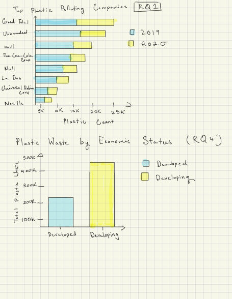
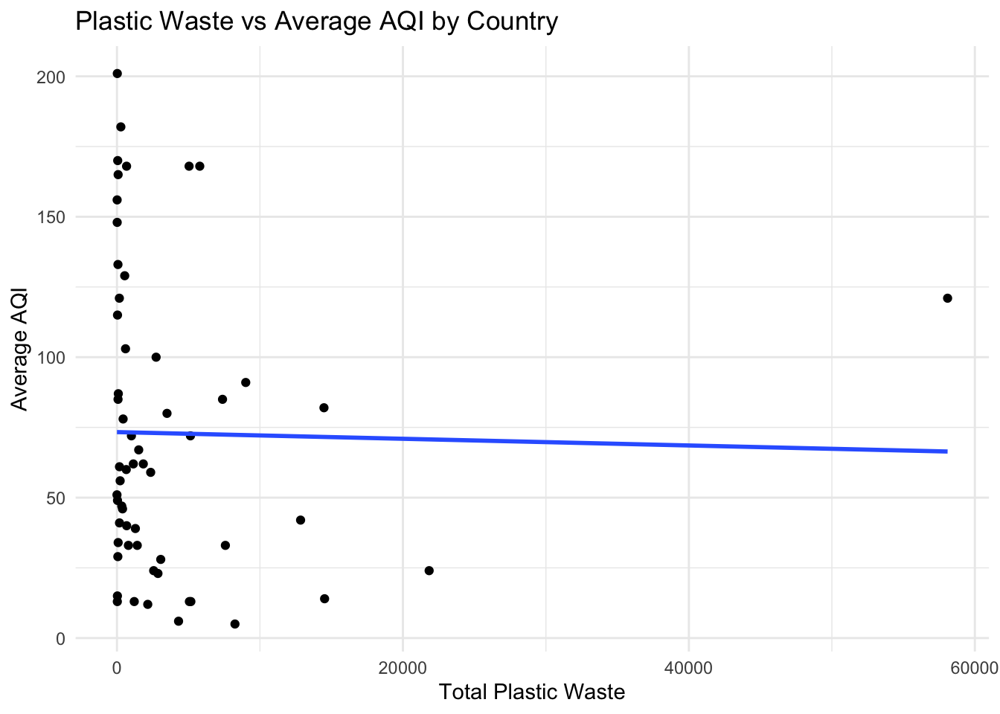

My dataset is the Break Free From Plastic (BFFP) from TidyTuesdays. This dataset looks at plastic waste collected during cleanup events around the world, where volunteers record variables like the country, year, parent company responsible, and counts of different plastic types.
The data comes from Break Free From Plastic global brand audits, which are organized to better understand where plastic pollution is coming from and to hold companies accountable. The dataset I’m using was put together by Sarah Sauve, who combined data from the 2019 and 2020 audits into one dataset. You find it here.
She also created a blog post and Shiny app describing her data cleaning process and analysis. She made it to contribute to global audit and as a way to understand plastic waste in St. John.
Each row represents a summary of plastic collected for a specific company, in a specific country and year. The values in each row are counts of different types of plastic for each company.
The different types of plastic are numeric, and they can be anywhere from 0 to a few hundred depending on how common the material is.
Here are a few rows of the dataset:
library(httr)library(tidyjson)
Attaching package: 'tidyjson'
The following object is masked from 'package:stats':
filter
library(jsonlite)
Attaching package: 'jsonlite'
The following object is masked from 'package:tidyjson':
read_json
── Conflicts ────────────────────────────────────────── tidyverse_conflicts() ──
✖ dplyr::filter() masks tidyjson::filter(), stats::filter()
✖ purrr::flatten() masks jsonlite::flatten()
✖ dplyr::lag() masks stats::lag()
✖ jsonlite::read_json() masks tidyjson::read_json()
ℹ Use the conflicted package (<http://conflicted.r-lib.org/>) to force all conflicts to become errors
country year parent_company empty hdpe ldpe o pet pp ps pvc
1 Argentina 2019 Grand Total 0 215 55 607 1376 281 116 18
2 Argentina 2019 Unbranded 0 155 50 532 848 122 114 17
3 Argentina 2019 The Coca-Cola Company 0 0 0 0 222 35 0 0
4 Argentina 2019 Secco 0 0 0 0 39 4 0 0
5 Argentina 2019 Doble Cola 0 0 0 0 38 0 0 0
6 Argentina 2019 Pritty 0 0 0 0 22 7 0 0
grand_total num_events volunteers
1 2668 4 243
2 1838 4 243
3 257 4 243
4 43 4 243
5 38 4 243
6 29 4 243
plastics |> dplyr::sample_n(6)
country year parent_company empty hdpe ldpe o pet pp ps pvc grand_total
1 EMPTY 2019 Mac's NA 0 0 1 0 0 0 0 1
2 Thailand 2019 prima mineral 0 0 NA 0 NA NA NA 0 0
3 China 2019 Zhenxiang NA NA NA 1 0 NA NA NA 1
4 Ukraine 2019 Truskavetska NA 0 0 0 1 0 0 NA 1
5 Indonesia 2019 Pt Sosro 0 0 0 0 7 0 0 0 7
6 Cameroon 2019 vhuobtc NA 0 0 0 12 0 0 0 12
num_events volunteers
1 145 1416
2 5 374
3 48 1439
4 7 114
5 32 6850
6 10 387
Data Cleaning
Sarah used several cleaning steps to make it usable. The original data came from a bunch of different CSV files from different countries and years, everything had to be combined into one dataset first. For the 2019 data, the country wasn’t included, so it was pulled from the file names and added as a new column. Also, not every country reported all plastic types, so missing columns like HDPE, PET, and more were added and filled with 0s. Some rows like “Grand Total” and entries where the company was listed as “NULL” were removed because they were just summary rows and not actual observations, which could mess up the analysis. The column names were also cleaned up so both years matched, and a year column was added before merging everything together.
Explorations
RQ1
Which parent companies contribute the most to plastic waste across different years?
RQ2
How does the distribution of plastic types like HDPE, PET, and more differ by country?
RQ3
How is plastic waste related to a a country’s recycling rate or waste management policies?
RQ4
Is there a relationship between plastic waste and a countries economic status (devloped vs devloping countries)?
Visualizations

summary stats using existing columns:
How do two brands compare in terms of their global reach, and how similar their distributions of plastic waste across countries?
# A tibble: 1 × 5
brand1 brand2 countries_brand1 countries_brand2 correlation
<chr> <chr> <int> <int> <dbl>
1 The Coca-Cola Company PepsiCo 61 30 0.360
Notes: The function takes in two brands as inputs and filters the dataset separately for each one. It then groups the data by country and calculates the total plastic associated with each brand in each country. The two datasets are combined so that both brands’ values are grouped by country, and missing values are replaced with 0 to show that they weren’t there. The function calculates the number of countries each brand appears in and computes a correlation coefficient to measure how similarly the two brands are distributed across countries. The Coca-Cola Company and PepsiCo had a correlation coefficient of .3598, showing that there is a weak correlation in how their plastic waste is distributed across countries.
What is the plastic diversity index by country arranged in decreasing order?
# A tibble: 69 × 2
country diversity
<chr> <dbl>
1 United Kingdom of Great Britain & Northern Ireland 1.74
2 Sri Lanka 1.74
3 Mexico 1.71
4 Indonesia 1.66
5 Canada 1.65
6 Chile 1.61
7 Tunisia 1.59
8 Bulgaria 1.56
9 Argentina 1.55
10 United States of America 1.52
# ℹ 59 more rows
Notes: I computed a plastic type diversity index for each country, which measures how evenly plastic waste is spread across the 8 plastic types in the dataset. A higher score means many plastic types were found in roughly equal amounts, while a lower score means one or two types dominated. The United Kingdom ranked highest with a score of 1.74, meaning its plastic waste was spread relatively evenly across many material types. Countries with lower scores tended to be dominated by PET, which makes sense given that plastic beverage bottles are one of the most commonly collected items in brand audits.
Summary stats using modified rows: 3) Summary 3 - Plastic Pollution Score Per Company
Modified Columns with Custom Function
What is the plastic pollution score for each brand based on how hard their plastic is to recycle?
Notes: I created pollution_score column by multiplying each plastic type’s count by a recycling difficulty weight. I wrote a custom function company_pollution_score() that takes a company name as input, applies the weights, and returns the total score, total plastic count, and average score per piece. I used map() to iterate this function over the top 10 companies by total plastic and combined the results with bind_rows().
With this data, the ranking of companies changes depending on total_score or average score per piece. The Coca-Cola Company has the highest total score due to sheer volume, but a relatively low average score per piece of 1.13. In contrast, Unilever has a higher average score per piece, meaning the plastic they produce is harder to recycle even if their total volume is lower.
How does the proportion of different plastic types differ across countries and change over time?
Notes: I grouped the data by country and year, summed total plastic and summed the total of plastic type, and then calculated proportions. I used map() to iterate through each plastic type and combined the results, then reshaped the data to compare types side by side.
Through this data I can see that in each country and year a few specific plastic types make up most of the total plastic waste, rather than contributing equally. For example, in Armenia the plastic type pet made up all of the country’s plastic waste
download data as zip file from Kaggle extract the csv file and store it in the same directory as the RProject file
Description:
This data contains geographical information for countries and their capital cities worldwide. It includes the country name, country code, capital city name, and the latitude and longitude coordinates of each capital. We will use this data as a bridge dataset to connect our plastic pollution data to the air quality API, which requires geographic cooordinates as input.
This dataset was acquired using the API Ninjas Air Quality API and returns current air quality measurements for a given latitude and longitude. For each country’s capital city, the API returned measurements for several pollutants including CO, NO2, O3, PM2.5, PM10, and SO2, as well as an overall AQI (Air Quality Index) score. With this data, we can investigate whether countries with higher levels of plastic pollution also tend to have worse air quality, potentially reflecting broader environmental mismanagement.
Here’s a snippet of the data set:
country_data <-read_csv("concap.csv")
Rows: 245 Columns: 6
── Column specification ────────────────────────────────────────────────────────
Delimiter: ","
chr (4): CountryName, CapitalName, CountryCode, ContinentName
dbl (2): CapitalLatitude, CapitalLongitude
ℹ Use `spec()` to retrieve the full column specification for this data.
ℹ Specify the column types or set `show_col_types = FALSE` to quiet this message.
head(country_data)
# A tibble: 6 × 6
CountryName CapitalName CapitalLatitude CapitalLongitude CountryCode
<chr> <chr> <dbl> <dbl> <chr>
1 Somaliland Hargeisa 9.55 44.0 NULL
2 South Georgia and So… King Edwar… -54.3 -36.5 GS
3 French Southern and … Port-aux-F… -49.4 70.2 TF
4 Palestine Jerusalem 31.8 35.2 PS
5 Aland Islands Mariehamn 60.1 19.9 AX
6 Nauru Yaren -0.548 167. NR
# ℹ 1 more variable: ContinentName <chr>
Below, we remove the unnecessary columns, keeping the country, capital, and coordinates columns, and then combine the new data with our existing Plastic Waste data set.
We made a custom function get_air_quality() that pulls air quality data for a city from the API using its latitude and longitude coordinates. We then used the map() function to iterate over each capital city from the Capital Cities data set from above.
api_key <-"Ak2gLRREowWx6UZfWH6JrL1RFzDR0JMdqoqih4ji"# function to pull data from APIget_air_quality <-function(lat, lon) { base_url <-"https://api.api-ninjas.com/v1/airquality" my_url <-glue("{base_url}?lat={lat}&lon={lon}") my_city <-GET( my_url,add_headers("X-Api-Key"= api_key) )# Check for successful responseif (status_code(my_city) !=200) return(NA) my_data <-fromJSON(rawToChar(my_city$content))return (my_data)}# to prevent crashing in case of failed API valuesafe_air_quality <-possibly( get_air_quality,otherwise =list(overall_aqi =NA,CO =list(concentration =NA, aqi =NA),NO2 =list(concentration =NA, aqi =NA),O3 =list(concentration =NA, aqi =NA),SO2 =list(concentration =NA, aqi =NA),PM2.5 =list(concentration =NA, aqi =NA),PM10 =list(concentration =NA, aqi =NA) ))# iterate function for all capital citiesunique_capitals <- pollution_data |>distinct(country, capital_lat, capital_long) |>filter(!is.na(capital_lat), !is.na(capital_long)) # create tibble of air quality dataair_data <- unique_capitals |>mutate(air_quality =map2(capital_lat, capital_long, safe_air_quality) ) |>unnest_wider(air_quality)# separate list objects into "pollutant"_concentration" and "pollutant"_aqi columnsair_data <- air_data |>unnest_wider(CO, names_sep ="_") |>unnest_wider(NO2, names_sep ="_") |>unnest_wider(O3, names_sep ="_") |>unnest_wider(PM10, names_sep ="_") |>unnest_wider(`PM2.5`, names_sep ="_") |>unnest_wider(SO2, names_sep ="_") |>select(-capital_lat, -capital_long)# create .csv file for air_datawrite_csv(air_data, "air_data.csv")
# read in air_dataair_data <-read_csv(file ="air_data.csv")
Rows: 61 Columns: 14
── Column specification ────────────────────────────────────────────────────────
Delimiter: ","
chr (1): country
dbl (13): CO_concentration, CO_aqi, NO2_concentration, NO2_aqi, O3_concentra...
ℹ Use `spec()` to retrieve the full column specification for this data.
ℹ Specify the column types or set `show_col_types = FALSE` to quiet this message.
# combinepollution_data <-left_join(pollution_data, air_data, by ="country")
Summary/visualization 1
Description:
We want to investigate whether countries with more plastic pollution also tend to have worse air quality. We grouped the meta dataset by country and computed the total plastic collected and average overall AQI score for each country. The table displays the top 10 countries by total plastic collected along with their corresponding air quality index, where a higher AQI indicates worse air quality. This allows us to see whether the most plastic-polluted countries also tend to have a poorer air quality.
Notes: Notes: We filtered out non-company rows such as “Grand Total” and “NULL”entries, then grouped by country and computed the total plastic collected, total volunteers, and average AQI score for each country using summarize(). Countries with missing AQI data or zero plastic collected were removed using filter(), results were sorted in descending order by total plastic using arrange(), and we displayed the top 10 countries using slice_max().
The results show no clear consistent pattern as the Philippines leads in both plastic collected and has a high AQI of 192, while Nigeria ranks second in plastic but has a very low AQI of 21. This suggests that plastic pollution and air quality are influenced by different factors across countries.
Visualization 2:
Description:
Description: I wanted to see the relationship between average air quality and total plastic waste across countries. We saw in the previous summary that there was not a consistent pattern between plastic pollution and air quality. However, I wanted to see if overall countries with higher levels of plastic pollution also tend to have worse air quality using a a scatter plot and a linear model.
ggplot(air_vs_plastic, aes(x = total_plastic, y = avg_aqi)) +geom_point() +geom_smooth(method ="lm", se =FALSE) +labs(title ="Plastic Waste vs Average AQI by Country",x ="Total Plastic Waste",y ="Average AQI" ) +theme_minimal()
`geom_smooth()` using formula = 'y ~ x'

model <-lm(avg_aqi ~ total_plastic, data = air_vs_plastic)summary(model)
Call:
lm(formula = avg_aqi ~ total_plastic, data = air_vs_plastic)
Residuals:
Min 1Q Median 3Q Max
-67.35 -40.22 -12.78 29.05 127.67
Coefficients:
Estimate Std. Error t value Pr(>|t|)
(Intercept) 73.3306706 7.7207849 9.498 2.86e-13 ***
total_plastic -0.0001190 0.0008378 -0.142 0.888
---
Signif. codes: 0 '***' 0.001 '**' 0.01 '*' 0.05 '.' 0.1 ' ' 1
Residual standard error: 53.59 on 56 degrees of freedom
Multiple R-squared: 0.00036, Adjusted R-squared: -0.01749
F-statistic: 0.02017 on 1 and 56 DF, p-value: 0.8876
Notes: The scatterplot shows that there is very little relationship between total plastic waste and average AQI across countries. Even thought the fitted regression line has a slight negative slope, it is almost flat, which shows that plastic waste is not a very good predictor of air quality. The linear model confirmas this through the large p-value of 0.888 and the coefficient for total_plastic being very close to zero which shows that the relationship is not statistically significant. Also, the R-squared value is very small, which means that total plastic waste explains almost none of the variation in average AQI across countries. These results suggest that plastic waste and air quality do not appear to have a meaningful linear relationship at the country level in this sample.